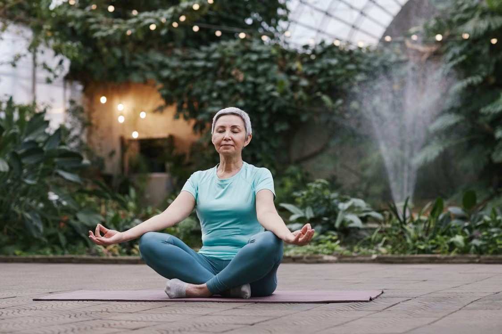

Meditation for Seniors: A Gentle Beginner's Guide

Think meditation isn't for you? Many of our members felt the same way — until they tried it sitting comfortably in a chair, eyes softly closed, for just a few minutes. Meditation is simpler than most people expect, and its benefits grow with age.
What meditation actually is (and isn't)
Meditation is not about "emptying your mind" or achieving a special state. It is simply the practice of noticing the present moment — your breath, your body, the sounds around you — with kindness, and gently returning whenever you wander. Everyone's mind wanders. Returning is the practice.
Benefits especially meaningful for older adults
- Calmer mind — reduced worry and racing thoughts
- Better sleep — easier to fall and stay asleep
- Steadier mood — many practitioners report feeling less irritable and more patient
- Sharper focus — attention training supports memory and concentration
- Less pain reactivity — meditation changes our relationship with chronic discomfort
Your first 5-minute meditation
- Sit comfortably in a chair with your feet flat. Rest your hands on your thighs.
- Set a gentle timer for 5 minutes so you don't watch the clock.
- Close your eyes or lower your gaze softly to the floor.
- Feel your breath — the air at your nostrils, or your belly rising and falling.
- When you notice thinking (you will!), silently say "thinking" and return to the breath. No judgment.
- End gently — take one deeper breath, wiggle fingers and toes, and open your eyes.
Common beginner questions
"Am I doing it wrong if my mind is busy?" Not at all. A busy mind doesn't mean failed meditation — each return to the breath is a repetition, like a gentle sit-up for your attention.
"Is meditation religious?" The practices we teach are secular mindfulness techniques suitable for people of all backgrounds and beliefs.
Our daily Breathwork & Meditation classes include guided sessions perfect for beginners, with a chair-based option for every practice.
This article is for general educational purposes and is not medical advice. Always speak with your healthcare provider before beginning a new exercise routine. Read our Health Disclaimer.